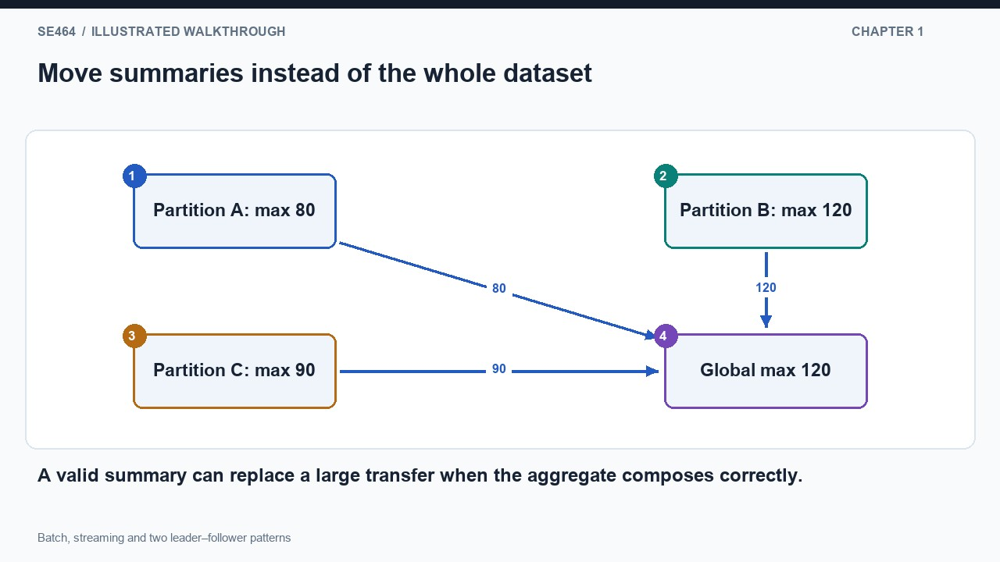
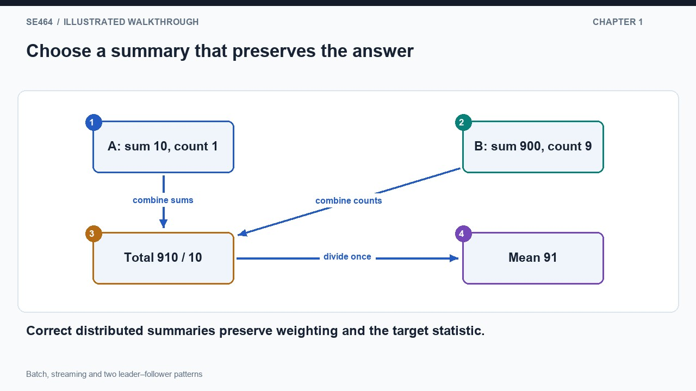
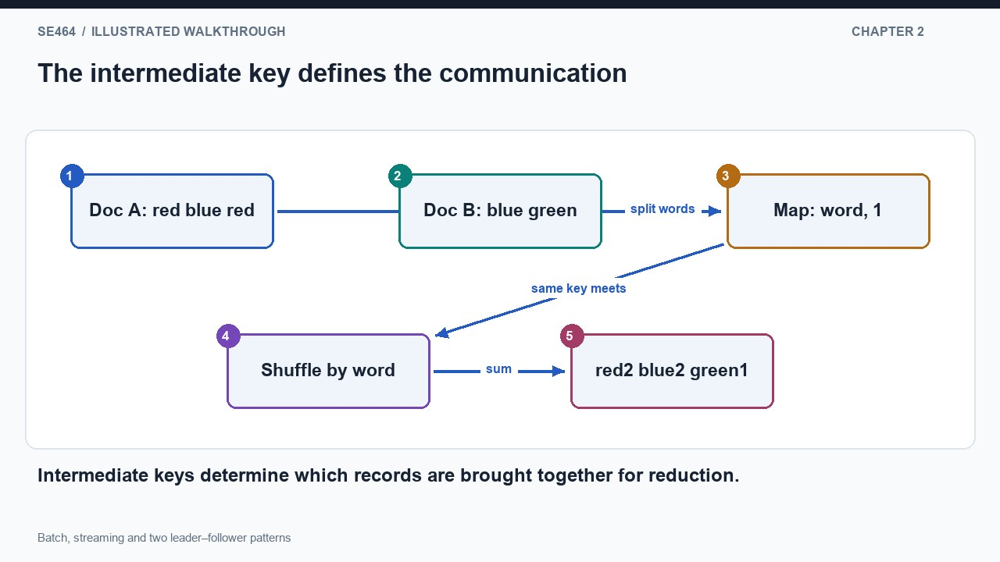
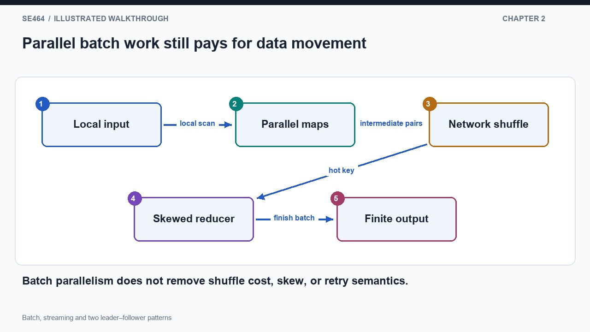
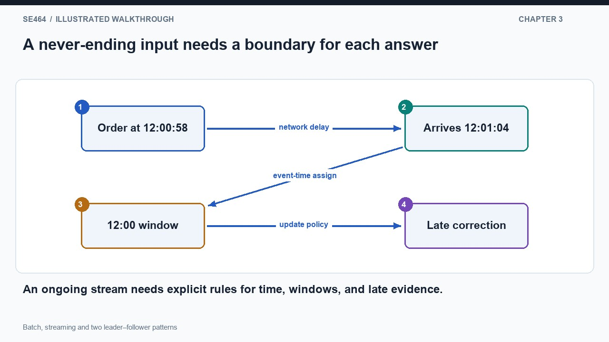
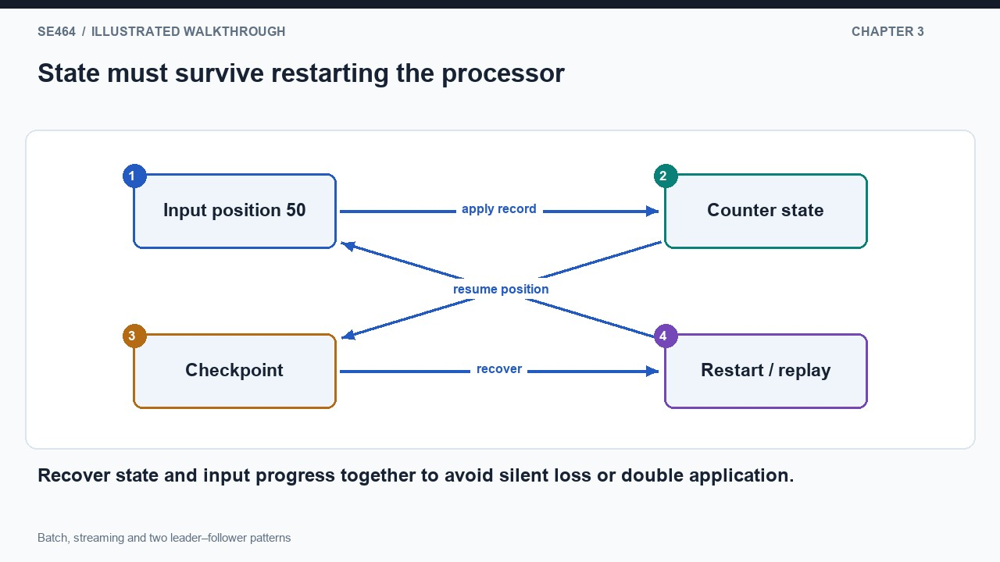
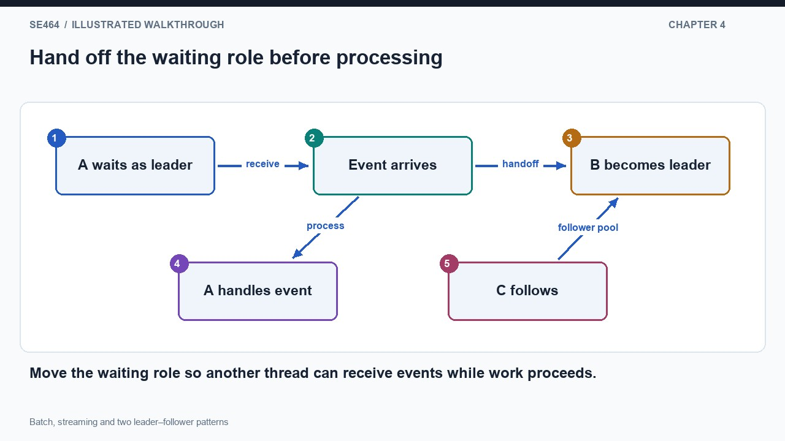
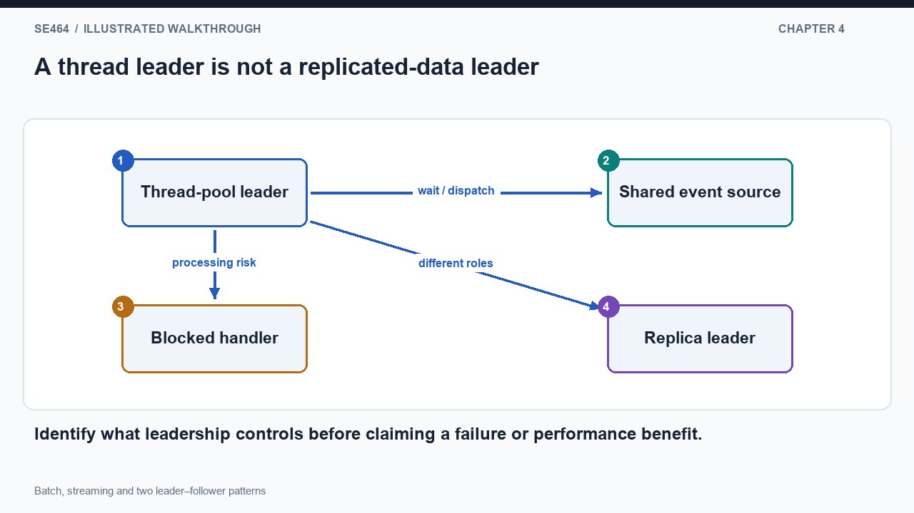
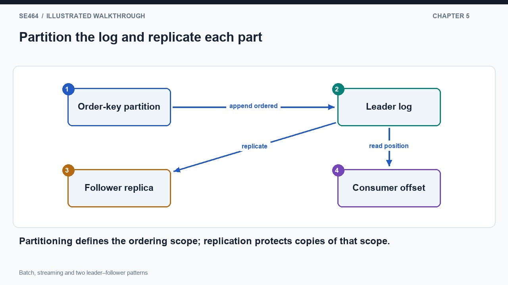
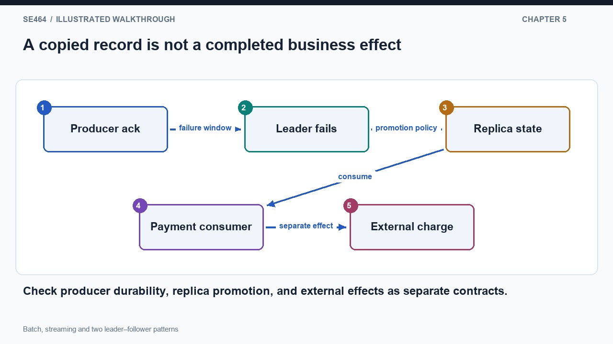

Compare batch and streaming computation, thread handoff and replicated-log leadership.
Suppose three workers store sales records and their local maximum orders are eighty, one hundred twenty, and ninety dollars. To find the global maximum, each worker scans its own records and sends just one candidate. The coordinator compares three numbers and returns one hundred twenty. Shipping every original order to the coordinator would do far more network work without improving this result. The key is an algebraic property: the maximum of local maxima equals the maximum of the union. Draw computation beside each partition and only the candidates crossing the network. This reasoning explains why some analyses parallelize easily while others require substantially richer intermediate information or several rounds of communication.
Serving independent requests is different from calculating one answer over a large shared dataset. For a global maximum, each worker can compute a local maximum and send one candidate to a coordinator. The coordinator takes the maximum of those candidates, so little data moves. Other operations need richer summaries or repeated communication, making network cost part of algorithm design rather than an incidental implementation detail.
Means reveal why the summary matters. Suppose one partition contains one order worth ten dollars and another contains nine orders totaling nine hundred dollars. Averaging their local means gives fifty-five dollars, which is wrong because it gives the partitions equal weight. Send each partition's sum and count instead; the global mean is nine hundred ten divided by ten, or ninety-one dollars. An exact median is harder still: local medians alone generally do not determine the global median. A pivot method asks every partition how many values lie below, equal to, and above a candidate, then narrows the target rank. Before selecting a framework, derive what information must cross partitions for the answer to remain correct.
For a mean, combine sums and counts instead of averaging unequal-sized partitions’ means. Exact median selection is more involved: a pivot-based algorithm counts values below, equal to and above the pivot and narrows the target rank. Duplicates and even-sized inputs require explicit treatment. Hardware bandwidth examples provide lower bounds only under stated assumptions; use decimal petabytes consistently or label binary units correctly.


Only when counts are equal. In general combine total sums and counts.
Count words in two documents: the first says red blue red, and the second says blue green. Each mapper emits a word and one for each occurrence. The shuffle groups all values with the same word, regardless of which document produced them. Reducers then add the grouped values, producing red two, blue two, and green one. Draw the blue emissions from both documents converging on the same group. This is the important step: the programmer's chosen intermediate key tells the framework which information must meet. The framework handles distribution and grouping, while the mapper and reducer define the calculation. An incorrect key can produce an efficient parallel job that answers the wrong question.
MapReduce asks a programmer to transform input records into intermediate key-value pairs, then combine values sharing a key. For word counting, the mapper emits one pair per word occurrence and the reducer sums counts for each word. The shuffle groups intermediate data by key. Scheduling, distribution and retries belong largely to the framework, so the program can focus on the transformations.
A batch job has a finite input and eventually completes, but its tasks may execute on many machines at once. Scheduling a mapper near its input reduces the need to move the raw data. The shuffle can still be expensive because records with matching keys must meet across partitions. If one word dominates the corpus, the corresponding reducer may become a bottleneck even when the input is evenly divided. Chaining jobs creates more intermediate datasets and communication stages, so sketch those intermediates before assuming that more machines solve the problem. Retries also matter: a failed task may run again, which is safe for framework-managed results under its contract but needs additional care for external side effects such as sending messages.
A batch job works on a bounded input and eventually finishes; it does not imply sequential execution. Multiple tasks can run in parallel, and several jobs can be chained through intermediate results. Data locality can reduce traffic, but shuffle still transfers information among workers. A skewed key can overload a reducer, and retried tasks mean side effects outside the framework need careful design.


It counts only the first word; it must emit or accumulate a pair for every occurrence.
A dashboard showing orders per minute cannot wait for the entire order stream to finish, because new orders keep arriving. It defines a window and produces an answer for that bounded interval while processing continues. Now let an order happen at 12:00:58 but reach the processor at 12:01:04 after a network delay. Event time places it in the earlier minute; arrival time places it in the later one. Choose which meaning the dashboard requires, then define whether a previously emitted count can be corrected. Calling the system real time does not answer those questions. The architecture needs explicit rules for window boundaries, late data, and the freshness the user can reasonably expect.
Stream processing reacts to an ongoing sequence rather than waiting for a complete dataset. Monitoring and recommendations may benefit from short update latency, while historical reporting can tolerate larger batch intervals. Low latency is a target, not an automatic guarantee. A stream operator may still wait for enough evidence, and overloaded consumers can accumulate lag even when the architecture is called real time.
A stream counter remembers partial results between messages. If it crashes after adding an order but before recording its input position, a restart may read that order again. If it records the position first and loses the counter update, it may skip the order instead. Recovery must coordinate the state with the consumed position under a defined processing contract. Checkpointing and replay are common building blocks, while external effects need their own idempotency or transaction design. A fast operator can also accumulate lag when arrivals exceed its capacity, so low latency is an operating condition rather than a label. Compare a nightly batch report and a continuously updated dashboard on their required freshness and recovery costs, not on whether either can process large data.
Stateful stream computations need rules for windows, late arrivals, duplicates and recovery. Distinguish event time from the time a processor receives the event. The slides introduce Storm through sources and processing components; treat ease-of-operation and feature comparisons as contextual rather than universal. Compare batch and streaming on freshness, boundedness and operational requirements, not on the assumption that one handles large data and the other does not.


The answer depends on the stated event-time and lateness policy; processing-time grouping would put it in today’s arrival window.
Imagine three threads sharing an event source. Thread A is the leader waiting for the next event while B and C are followers. When an event arrives, A arranges for a follower to become the new leader, then handles the event itself. B can now wait for another event while A performs application work. Draw leadership as a role that moves between threads, not as a permanently special machine. The handoff avoids having every waiting thread compete unnecessarily for the same event notification. The design also keeps event waiting separate from potentially slower handling. Its value depends on the event system and workload, so the performance argument should identify which coordination or scheduling overhead is actually reduced.
The Leader/Followers concurrency pattern coordinates a pool of threads waiting for events. One thread leads by waiting on an event source; when an event arrives, another follower can become leader while the previous leader handles the work. The purpose is efficient event dispatch with controlled coordination overhead, not replication of durable data across a cluster of machines.
Now compare this thread pool with a replicated database. The thread-pool leader waits on an event source and coordinates dispatch within a process. A database leader may accept writes and coordinate durable state across machines. Replacing a waiting thread does not solve replica agreement after a network partition, and it does not imply that acknowledged data survives a machine failure. Keeping the two meanings separate prevents an architecture explanation from borrowing guarantees from an unrelated pattern. Within the thread pool, still examine what happens if a handler blocks, whether another thread can continue receiving events, and how cancellation works. Correct handoff protects the shared event source; it is not a substitute for timeouts or bounded work in the handlers.
Correct handoff protects shared event sources and avoids having every thread compete for the same notification. Benefits depend on workload and runtime, and a blocked handler still needs appropriate timeout or cancellation behavior. Do not import distributed consensus claims into this thread-pool pattern: a new leading thread is not equivalent to safely electing a database leader after a network partition. Distinguish the two before discussing fault tolerance.


No. Thread leadership manages local concurrency; durable distributed recovery is a separate design.
A partitioned log divides records among several ordered sequences. Each partition can have a leader handling its operations and followers copying its records. Different brokers can lead different partitions, so leadership is distributed across the cluster rather than concentrated in one universal writer. Within a partition, record positions provide an order and consumers track their progress. Across partitions, there is no automatic single global order. For order events, using the order identifier as the partitioning key can keep one order's sequence together while unrelated orders proceed in parallel. Draw partition boundaries before drawing leader and follower arrows. Otherwise a diagram with several brokers can misleadingly suggest that every record is ordered against every other record in the entire system.
Kafka illustrates a different use of leader and follower terminology. A partition has a leader responsible for its log operations and replica followers that copy its data. Leadership can move after failure under a cluster coordination policy. Several partitions can distribute leadership across brokers, so one leader per partition does not mean the entire system has only one active writer.
Suppose a leader accepts a record and fails before a follower receives it. Whether an acknowledged record can be lost depends on the acknowledgement and election rules, not merely on the presence of a follower box in the diagram. A lagging replica should not be treated as an equally current replacement without considering the durability consequence. Downstream, a payment worker can read a safely replicated record and still crash around an external charge. Log durability and effect correctness are separate boundaries. Trace the record from producer acknowledgement through replication, consumption, and external result. The historical coordination service shown in older diagrams is an implementation detail of that version; preserve the reasoning about leadership, progress, and failure rather than assuming the topology never changes.
Durability and availability depend on acknowledgements, in-sync replicas and election policy; replication alone is not an unconditional guarantee. A lagging replica may be unsuitable for safe promotion. The slides’ ZooKeeper control-plane account is historical, while Kafka 4 uses KRaft. For the e-commerce analytics example, distinguish ingestion durability from successful downstream computation and from committing external business effects exactly once.


No. Its synchronization state and the configured election and acknowledgement policies matter.
Sum all partition sums and divide by the sum of their counts.
Batch refers to bounded input and a finishing job; many map/reduce tasks can execute in parallel.
One coordinates event-handling threads locally; the other replicates partition logs across brokers and requires distributed failure policies.
Design enrolment analytics with a nightly historical report and a live dashboard. Explain recovery and the leadership pattern involved.
Run a bounded batch aggregation for the historical report and a stateful streaming projection for the dashboard. Partition events by an appropriate entity, define event-time/late-data handling, checkpoint progress and make outputs replay-safe. Broker partition leaders replicate logs; a local event-loop thread pool, if used, solves a different concurrency problem.
Questions-only worksheet · Worked answer sheet
A bus dashboard counts arrivals in event-time windows ending every five minutes. Messages can arrive up to two minutes late, and the interface may show provisional counts that are later corrected. The team proposes finalizing a window as soon as the wall clock reaches its end. Under the stated lateness assumption, which policy best supports accurate eventual counts without holding every window open forever?
Best answer: B.
Show a provisional result at the window boundary and finalize only when a watermark or equivalent progress rule has passed that boundary under the two-minute lateness assumption. Late events within the supported interval update the provisional count; beyond-bound events need an explicit correction or rejection policy. The watermark expresses an assumption about event-time progress, not absolute proof against arbitrary delay. This approach balances early visibility with eventual completeness and bounded state; simply waiting for the first message in the next window does not establish that the previous window is complete.
Event-time windows need a completeness policy. Low-latency display and final results can be distinct product states.
A batch job counts page views by category. Of 100 million records, 60 million have category “home”; the other records are evenly distributed over thousands of categories. The framework sends all values for one key to one reducer, and mappers currently emit (category,1) for every record. Explain why adding reducers may barely improve completion time. Propose a correct two-stage aggregation and describe which property of counting makes it safe.
The home key still sends 60 million values to one reducer, so that reducer can dominate job completion even as other reducers gain capacity. First aggregate locally in mappers or use salted partial keys such as (home,bucket), producing partial counts. A second stage groups by the original category and sums those counts. Integer counting is associative and commutative, so regrouping preserves the result when every input contributes exactly once to the logical computation. Task retry/output handling must still avoid duplicate committed contributions; arbitrary side effects cannot be treated like framework-managed output.
More parallel slots do not split a single hot grouping key. Partial aggregation reduces data movement and redistributes the expensive intermediate work.
A replicated analytics log has leader L and followers F1 and F2. L and F1 have committed records through offset 8,400; F2 has only reached 8,120. L fails, and a network partition makes F1 temporarily unreachable from the controller that can reach F2. The system promises not to lose acknowledged records, even if writes pause. Explain whether promoting F2 is justified and what recovery must establish before safe progress resumes.
Promoting F2 merely because it is reachable would risk losing the acknowledged suffix from 8,121 through 8,400, so it is not justified under the stated promise. Pause progress until the system can establish a valid authoritative leader with the required committed history, for example by restoring contact with an eligible up-to-date replica under its coordination protocol. Membership, election terms and fencing must also prevent the old leader from accepting conflicting work after recovery. The exact eligibility rule is product-specific; local thread promotion cannot solve this distributed durability problem.
Availability during failure is constrained by the durability contract. Safe leadership needs both an eligible log and an authoritative election.